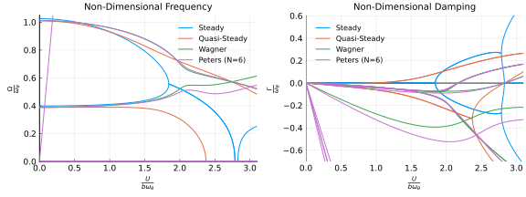

Examples
Aeroelastic Analysis of the Typical Section Model
In this example, we demonstrate how to perform a two-dimensional aeroelastic analysis using a typical section model with two degrees of freedom.

The equations of motion for this model are
\[m \left(\ddot{h}+b x_\theta \ddot{\theta} \right) + k_h h = -L \\ I_P \ddot{\theta} + m b x_\theta \ddot{h} + k_\theta = M_{\frac{1}{4}} + b \left( \frac{1}{2} + a \right) L\]
where $a$ is the normalized distance from the semichord to the reference point, $b$ is the semichord length, $k_h$ is the linear spring constant, $k_\theta$ is the torsional spring constant, $m$ is the mass per unit span, $x_\theta$ is the distance to the center of mass from the reference point, $I_P$ is the moment of inertia about the reference point, $L$ is the lift per unit span, and $M_\frac{1}{4}$ is the quarter-chord moment per unit span.
We use the non-dimensional parameters
\[a = -1/5 \quad e = -1/10 \\ r^2 = \frac{I_P}{m b^2} \quad \sigma = \frac{\omega_h}{\omega_\theta} \\ \mu = \frac{m}{\rho_\infty \pi b^2} \quad V = \frac{U}{b \omega_\theta}\]
where $a$ is the normalized distance from the semichord to the reference point, $e$ is the normalized distance from the semichord to the center of mass, and $\omega_h$ and $\omega_\theta$ are the uncoupled natural frequencies.
\[\omega_h = \sqrt{\frac{k_h}{m}} \quad \omega_\theta = \sqrt{\frac{k_\theta}{I_P}}\]
We perform aeroelastic analyses using a variety of aerodynamic models in order to compare the various models.
using AerostructuralDynamics, LinearAlgebra
# reduced velocity range
V = range(0, 3.1, length=5000) # (reduced velocity)
# non-dimensional parameters
a = -1/5 # reference point normalized location
e = -1/10 # center of mass normalized location
μ = 20 # = m/(ρ*pi*b^2) (mass ratio)
r2 = 6/25 # = Ip/(m*b^2) (radius of gyration about P)
σ = 2/5 # = ωh/ωθ (natural frequency ratio)
xθ = e - a
# chosen dimensional parameters
b = 1
ρ = 1
ωθ = 1
# derived dimensional parameters
m = μ*ρ*pi*b^2
Ip = r2*m*b^2
ωh = σ*ωθ
kh = m*ωh^2
kθ = Ip*ωθ^2
# dimensionalized velocity
U = V*b*ωθ
# aerodynamic models
aerodynamic_models = (Steady(), QuasiSteady(), Wagner(), Peters{6}())
# structural model
structural_model = TypicalSection()
# eigenvalue storage
λ = Vector{Matrix{ComplexF64}}(undef, length(aerodynamic_models))
# loop through each aerodynamic model
for (ia, aerodynamic_model) in enumerate(aerodynamic_models)
# combined models
models = (aerodynamic_model, structural_model)
# eigenvalue storage
λ[ia] = zeros(ComplexF64, number_of_states(models), length(V))
# loop through each reduced frequency
for i = 1:length(V)
# state variables
u_aero = zeros(number_of_states(aerodynamic_model))
u_stru = zeros(number_of_states(structural_model))
u = vcat(u_aero, u_stru)
# parameters
p_aero = [a, b, U[i], ρ]
p_stru = [a, b, kh, kθ, m, xθ, Ip]
p = vcat(p_aero, p_stru)
# time
t = 0.0
# calculate inputs
y = get_inputs(models, u, p, t)
# mass matrix
M = get_mass_matrix(models, u, y, p, t)
# jacobian
J = get_state_jacobian(models, u, y, p, t)
# solve generalized eigenvalue problem
λ[ia][:,i] = sort(eigvals(J, M), by=LinearAlgebra.eigsortby)
end
endWe now plot the results predicted using each aerodynamic model.
using Plots
pyplot()
default(
titlefontsize = 14,
legendfontsize = 11,
guidefontsize = 14,
tickfontsize = 11,
foreground_color_legend = nothing,
background_color_legend = nothing,
minorgrid=true,
framestyle = :zerolines)
sp1 = plot(
title = "Non-Dimensional Frequency",
xlim = (0,3.1),
xtick = 0.0:0.5:3.0,
xlabel = "\$ \\frac{U}{b \\omega_\\theta} \$",
ylim = (0, 1.05),
ytick = 0.0:0.2:1.0,
ylabel = "\$ \\frac{\\Omega}{\\omega_\\theta} \$",
legend = :topright
)
sp2 = plot(
title = "Non-Dimensional Damping",
xlim = (0,3.1),
xtick = 0.0:0.5:3.0,
xlabel = "\$ \\frac{U}{b \\omega_\\theta} \$",
ylim = (-0.7, 0.605),
ytick = -0.6:0.2:0.6,
ylabel = "\$ \\frac{Γ}{\\omega_\\theta} \$",
legend = :topleft
)
labels = ["Steady", "Quasi-Steady", "Wagner", "Peters (N=6)"]
for ia = 1:length(aerodynamic_models)
scatter!(sp1, V, imag.(λ[ia][1,:])/ωθ,
label = labels[ia],
color = ia,
markersize = 1,
markerstrokewidth = 0,
)
for i = 2:size(λ[ia], 1)
scatter!(sp1, V, imag.(λ[ia][i,:])/ωθ,
label = "",
color = ia,
markersize = 1,
markerstrokewidth = 0,
)
end
scatter!(sp2, V, real.(λ[ia][1,:])/ωθ,
label = labels[ia],
color = ia,
markersize = 1,
markerstrokewidth = 0,
)
for i = 2:size(λ[ia], 1)
scatter!(sp2, V, real.(λ[ia][i,:])/ωθ,
label = "",
color = ia,
markersize = 1,
markerstrokewidth = 0,
)
end
end
p1 = plot(sp1, sp2, layout = (2, 1), size = (600, 800))[ Info: Installing matplotlib via the Conda matplotlib package...
[ Info: Running `conda install -q -y matplotlib` in root environment
Collecting package metadata (current_repodata.json): ...working... done
Solving environment: ...working... done
## Package Plan ##
environment location: /home/runner/.julia/conda/3
added / updated specs:
- matplotlib
The following packages will be downloaded:
package | build
---------------------------|-----------------
cycler-0.10.0 | py38_0 14 KB
dbus-1.13.18 | hb2f20db_0 504 KB
expat-2.4.1 | h2531618_2 168 KB
fontconfig-2.13.1 | h6c09931_0 250 KB
freetype-2.10.4 | h5ab3b9f_0 596 KB
glib-2.68.2 | h36276a3_0 3.0 MB
gst-plugins-base-1.14.0 | h8213a91_2 4.9 MB
gstreamer-1.14.0 | h28cd5cc_2 3.2 MB
icu-58.2 | he6710b0_3 10.5 MB
jpeg-9b | h024ee3a_2 214 KB
kiwisolver-1.3.1 | py38h2531618_0 80 KB
lcms2-2.12 | h3be6417_0 312 KB
libpng-1.6.37 | hbc83047_0 278 KB
libtiff-4.2.0 | h85742a9_0 502 KB
libuuid-1.0.3 | h1bed415_2 15 KB
libwebp-base-1.2.0 | h27cfd23_0 437 KB
libxcb-1.14 | h7b6447c_0 505 KB
libxml2-2.9.10 | hb55368b_3 1.2 MB
lz4-c-1.9.3 | h2531618_0 186 KB
matplotlib-3.3.4 | py38h06a4308_0 26 KB
matplotlib-base-3.3.4 | py38h62a2d02_0 5.1 MB
olefile-0.46 | py_0 33 KB
pcre-8.44 | he6710b0_0 212 KB
pillow-8.2.0 | py38he98fc37_0 628 KB
pyparsing-2.4.7 | pyhd3eb1b0_0 59 KB
pyqt-5.9.2 | py38h05f1152_4 4.5 MB
python-dateutil-2.8.1 | pyhd3eb1b0_0 221 KB
qt-5.9.7 | h5867ecd_1 68.5 MB
sip-4.19.13 | py38he6710b0_0 277 KB
tornado-6.1 | py38h27cfd23_0 588 KB
zstd-1.4.9 | haebb681_0 480 KB
------------------------------------------------------------
Total: 107.3 MB
The following NEW packages will be INSTALLED:
cycler pkgs/main/linux-64::cycler-0.10.0-py38_0
dbus pkgs/main/linux-64::dbus-1.13.18-hb2f20db_0
expat pkgs/main/linux-64::expat-2.4.1-h2531618_2
fontconfig pkgs/main/linux-64::fontconfig-2.13.1-h6c09931_0
freetype pkgs/main/linux-64::freetype-2.10.4-h5ab3b9f_0
glib pkgs/main/linux-64::glib-2.68.2-h36276a3_0
gst-plugins-base pkgs/main/linux-64::gst-plugins-base-1.14.0-h8213a91_2
gstreamer pkgs/main/linux-64::gstreamer-1.14.0-h28cd5cc_2
icu pkgs/main/linux-64::icu-58.2-he6710b0_3
jpeg pkgs/main/linux-64::jpeg-9b-h024ee3a_2
kiwisolver pkgs/main/linux-64::kiwisolver-1.3.1-py38h2531618_0
lcms2 pkgs/main/linux-64::lcms2-2.12-h3be6417_0
libpng pkgs/main/linux-64::libpng-1.6.37-hbc83047_0
libtiff pkgs/main/linux-64::libtiff-4.2.0-h85742a9_0
libuuid pkgs/main/linux-64::libuuid-1.0.3-h1bed415_2
libwebp-base pkgs/main/linux-64::libwebp-base-1.2.0-h27cfd23_0
libxcb pkgs/main/linux-64::libxcb-1.14-h7b6447c_0
libxml2 pkgs/main/linux-64::libxml2-2.9.10-hb55368b_3
lz4-c pkgs/main/linux-64::lz4-c-1.9.3-h2531618_0
matplotlib pkgs/main/linux-64::matplotlib-3.3.4-py38h06a4308_0
matplotlib-base pkgs/main/linux-64::matplotlib-base-3.3.4-py38h62a2d02_0
olefile pkgs/main/noarch::olefile-0.46-py_0
pcre pkgs/main/linux-64::pcre-8.44-he6710b0_0
pillow pkgs/main/linux-64::pillow-8.2.0-py38he98fc37_0
pyparsing pkgs/main/noarch::pyparsing-2.4.7-pyhd3eb1b0_0
pyqt pkgs/main/linux-64::pyqt-5.9.2-py38h05f1152_4
python-dateutil pkgs/main/noarch::python-dateutil-2.8.1-pyhd3eb1b0_0
qt pkgs/main/linux-64::qt-5.9.7-h5867ecd_1
sip pkgs/main/linux-64::sip-4.19.13-py38he6710b0_0
tornado pkgs/main/linux-64::tornado-6.1-py38h27cfd23_0
zstd pkgs/main/linux-64::zstd-1.4.9-haebb681_0
Preparing transaction: ...working... done
Verifying transaction: ...working... done
Executing transaction: ...working... done
The same analysis and results are presented by Hodges and Pierce in "Introduction to Structural Dynamics and Aeroelasticity" for the steady state and Peters' Finite State models. The results shown here match with those provided by Hodges and Pierce, thus validating our implementation of these models.